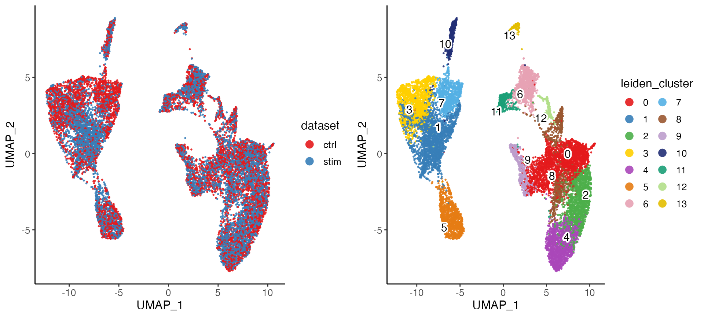
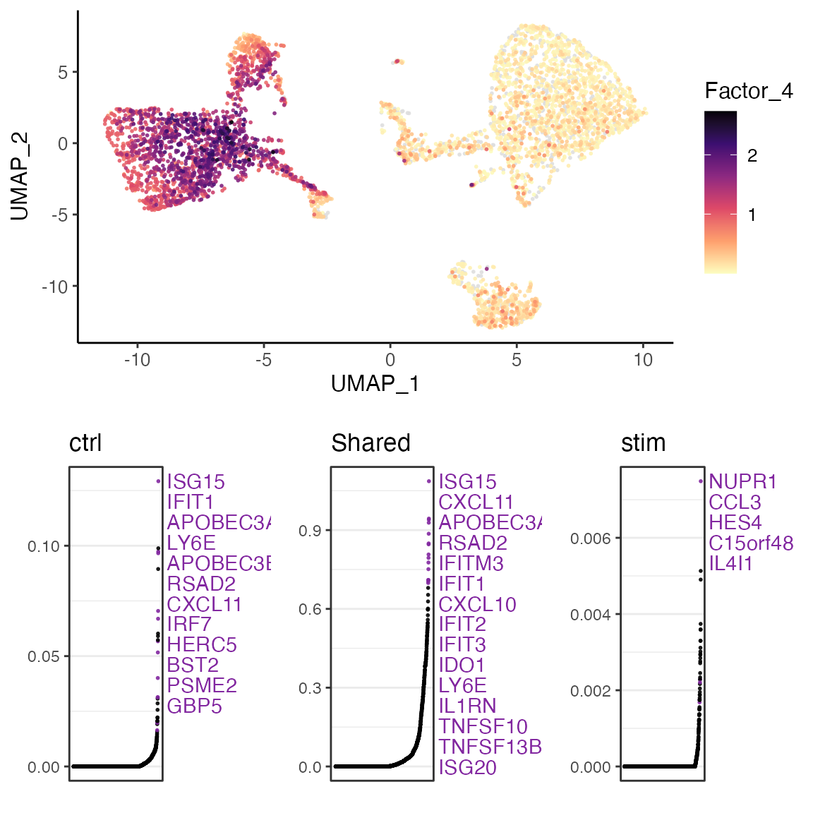
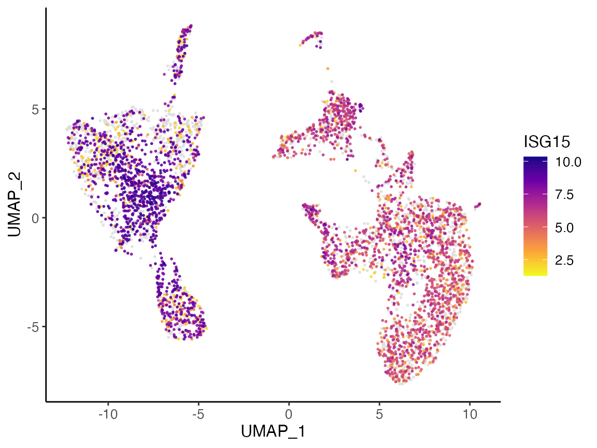
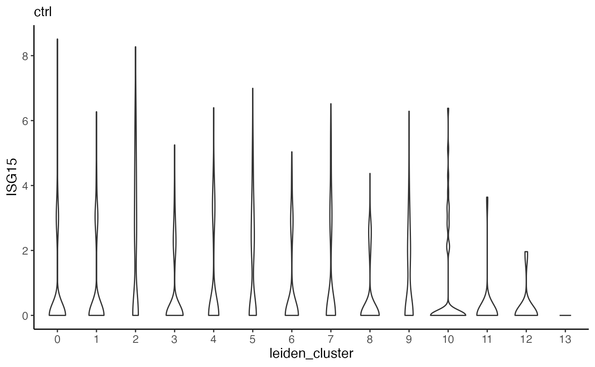
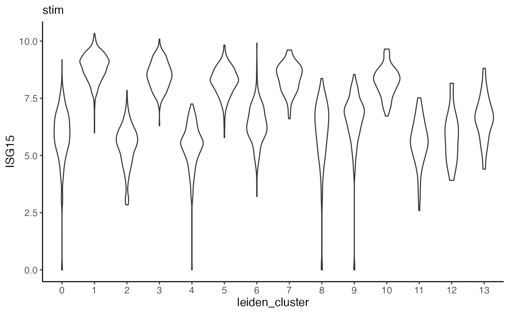
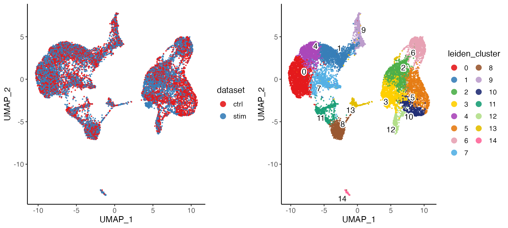

Iterative single-cell multi-omic integration using online learning
Chao Gao and Joshua Welch
9/7/2021
Source:vignettes/articles/online_iNMF_tutorial.Rmd
online_iNMF_tutorial.RmdLoad data and preprocess
LIGER supports integrating datasets based on HDF5 files, for
examples, the 10X CellRanger output file located at
sample/outs/filtered_feature_bc_matrix.h5 can be used with
LIGER. Here’s the link to learn more about CellRanger
output HDF5 files. With the feature that we read one chunk of data
into memory at a time, large-scale datasets stored on disk can be
analyzed with a rather small memory specification.
Large datasets are often generated over multiple 10X runs (for example, multiple biological replicates). In such cases it may be necessary to merge the HDF5 files from each run into a single HDF5 file. We provide the
mergeH5()function for this purpose.
To integrate datasets stored in HDF5 files, we first create a liger object using the file names of the HDF5 files. We prepared the following example datasets for demonstration:
library(rliger)
dataSource <- data.frame(
filenames = c("pbmcs_ctrl_vignette.h5",
"pbmcs_stim_vignette.h5"),
urls = c("https://figshare.com/ndownloader/files/43108963",
"https://figshare.com/ndownloader/files/43108966")
)
for (i in seq_len(nrow(dataSource))) {
if (!file.exists(dataSource$filenames[i])) {
download.file(dataSource$urls[i], destfile = dataSource$filenames[i])
}
}
pbmcs <- createLiger(list(ctrl = dataSource$filenames[1],
stim = dataSource$filenames[2]))Similar to other iNMF integration tutorial, we also need to preprocee the data by 1. normalizing each cell by its library size, 2. select variable genes for each dataset, and 3. scale the gene expression within each dataset in a non-negative way.
pbmcs <- pbmcs %>%
normalize() %>%
selectGenes(var.thresh = 0.2) %>%
scaleNotCenter()Scenario 1: sampling minibatches from fully observed datasets
Online Integrative Nonnegative Matrix Factorization
Now we can use online iNMF to factorize the data, again using only
minibatches that we read from the HDF5 files on demand (default
mini-batch size = 5000). Sufficient number of iterations is crucial for
obtaining ideal factorization result. If the size of the mini-batch is
set to be close to the size of the whole dataset (i.e. an epoch only
contains one iteration), max.epochs needs to be increased
accordingly for more iterations.
pbmcs <- runIntegration(pbmcs, k = 20, method = "online")Joint clustering and visualization
After performing the factorization, we can perform quantile normalization to align the datasets, and then use graph based community detection algorithm to find clusters.
pbmcs <- quantileNorm(pbmcs)
pbmcs <- runCluster(pbmcs, nNeighbors = 30, resolution = .6, nRandomStarts = 2)We can also visualize the cell factor loadings in two dimensions using t-SNE or UMAP.
pbmcs <- runUMAP(pbmcs, nNeighbors = 30, minDist = .3)
plotByDatasetAndCluster(pbmcs)
Downstream analysis
For downstream analysis that requires expression data, such as
differential expression test, we currently do not support direct
computation using on-disk HDF5 data. In order to conduct such analyses,
users need to create downsampled subset from the large-scale on-disk
data and read it into memory. By default, downsample()
function randomly samples maxCells cells. Alternatively, we
can set balanced sampling basing on given categorical variables. Note
that newH5 = FALSE has to be set in order to take the
subsample into memory, other wise another downsampled HDF5 file would be
created and still cannot be used for those downstream analysis
method.
pbmcs.sample <- downsample(pbmcs, maxCells = 5000, useSlot = "normData", newH5 = FALSE)Using the sampled data stored in memory, we can now compare clusters
or datasets to identify differentially expressed genes. The
runMarkerDEG() function performs differential expression
analysis, by default with Wilcoxon rank-sum test. The default mode of
mark detection goes for finding the marker of each cluster by performing
the test between a cluster against all the rest. Here, we demonstrate
finding the dataset-specific markers, within each cluster.
markerTableList <- runMarkerDEG(pbmcs.sample, conditionBy = "dataset", splitBy = "leiden_cluster")The returned object is a list where each element is a dataset-specific marker table derived within each cluster and contains all stats for all the genes without filtering or sorting. We strongly suggest using package “dplyr” for data frame operation due to the simplicity. Here, we show an example of getting the top 10 markers for “stim” within cluster 2.
library(dplyr)
markerTable2 <- markerTableList$`2`
markerTable2 %>%
filter(logFC > 1, padj < 0.05, group == "stim") %>%
arrange(padj, -logFC) %>%
top_n(10) %>%
select(feature, logFC, padj)We can show UMAP coordinates of sampled cells by their loadings on each factor (Factor 4 as an example). The lower part of the figure shows the gene loading ranking of the factor, with the middle showing the ranking of the shared gene loading, and the dataset-specific gene loading ranking on two sides.
factorMarker <- getFactorMarkers(pbmcs.sample, dataset1 = "ctrl", dataset2 = "stim")
plotGeneLoadings(pbmcs.sample, markerTable = factorMarker, useFactor = 4)
Visualization with expression
With the subsampled data loaded into memory, we can then also generate plots of dimensional reduction coordinates colored by expression of specified gene. For example, the gene ISG15 has expression visualized below.
plotGeneDimRed(pbmcs.sample, "ISG15")
Furthermore, we can make violin plots of expression of specified gene. Taking ISG15 as an example again, we can make a violin plot for each dataset and group each by cluster.
plotGeneViolin(pbmcs.sample, "ISG15", byDataset = TRUE, title = names(pbmcs.sample))
Scenario 2: iterative refinement by incorporating new datasets
The second scenario of online learning algorithm is where we have performed factorization on existing dataset(s), and we add on continually arriving datasets to the pool and update the factorization with existing result.
For example, still with the same PBMC example, we first perform online iNMF on the control dataset.
pbmcs <- createLiger(list(ctrl = "pbmcs_ctrl_vignette.h5")) %>%
normalize() %>%
selectGenes() %>%
scaleNotCenter() %>%
runIntegration(method = "online")Then, we obtain the new dataset, and then run online iNMF with adding it as a new arriving dataset. There are a couple of points to note.
- There are different ways of specifying new datasets. We allow using either a named list of raw data. If users work with HDF5 based data all the way, then it’s best to have a named list of HDF5 filenames. If users work with in-memory matrices, then a named list of matrix objects (dgCMatrix class).
- New datasets are always regarded as raw count input, and will be preprocessed internally. The variable genes identified using the original existing datasets will always be used for taking the scaled data. Therefore, users need to make sure that the newly arriving datasets have them available.
- Alternatively, a liger
object can also be used as an input for the argument
newDatasets. Users need to be aware of the second point above, because we remove missing features by default and can cause error when variable features obtained from existing dataserts is identified as missing when creating the object for new datasets. - For HDF5 filename inputs, it is assumed that the program can find raw counts data with 10X CellRanger format. If the HDF5 file stores raw counts data in a different way (e.g. H5AD data), users will need to create a separate liger object with specification, and then use the constructed object as input while being aware of the 2nd and 3rd point above.
- After seccessfully integrating the new datasets with the existing factorization, the returned liger obejct will have them inserted.
pbmcs.new <- runOnlineINMF(pbmcs, newDatasets = list(stim = "pbmcs_stim_vignette.h5"))After the factorization, we can go through the same procedure to align the factor loading and jointly cluster the cells, as well as visualize the integration result.
pbmcs.new <- quantileNorm(pbmcs.new) %>%
runCluster(nNeighbors = 30, resolution = .6, nRandomStarts = 2) %>%
runUMAP(nNeighbors = 30, minDist = .3)
plotByDatasetAndCluster(pbmcs.new)
Scenario 3: Projecting new datasets
The third scenario serves as a fast inspection for new datasets. We
do not update the factorization with newly arriving data, but instead,
compute the factor loading in cells (i.e. \(H\) matrices for new datasets) using the
existing gene loading in the factors (\(W\) matrix from previous factorization).
Therefore, no dataset-specific gene loading in factors (\(V\) matrices) can be produced for the new
datasets in this approach. Scenario 3 can be triggered with specifying
the new datasets, following the same guidance as in scenario 2 above,
and set projection = TRUE.
pbmcs <- createLiger(list(ctrl = "pbmcs_ctrl_vignette.h5")) %>%
normalize() %>%
selectGenes() %>%
scaleNotCenter() %>%
runIntegration(method = "online")
pbmcs.new <- runOnlineINMF(pbmcs, newDatasets = list(stim = "pbmcs_stim_vignette.h5"), projection = TRUE)
pbmcs.new <- quantileNorm(pbmcs.new) %>%
runCluster(nNeighbors = 30, resolution = .6, nRandomStarts = 2) %>%
runUMAP(nNeighbors = 30, minDist = .3)
plotByDatasetAndCluster(pbmcs.new)